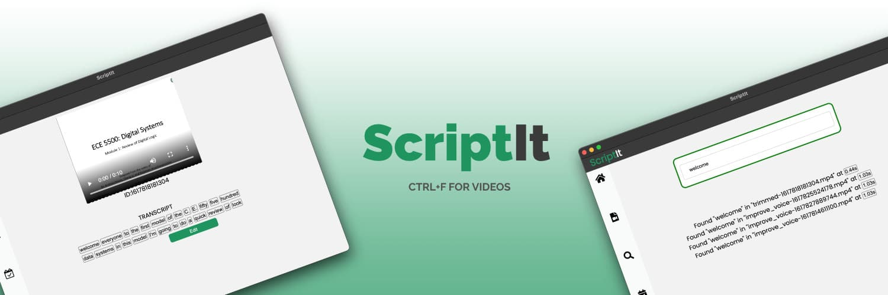
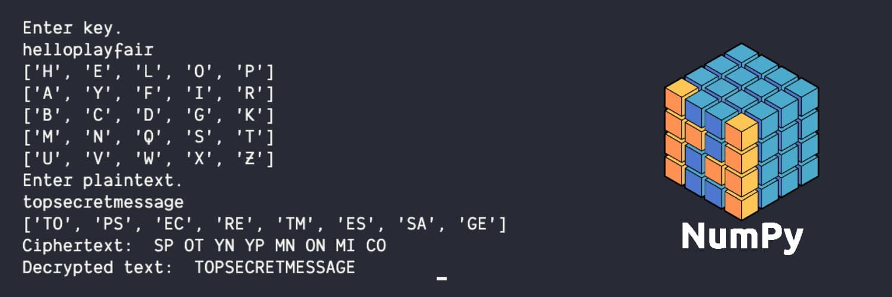
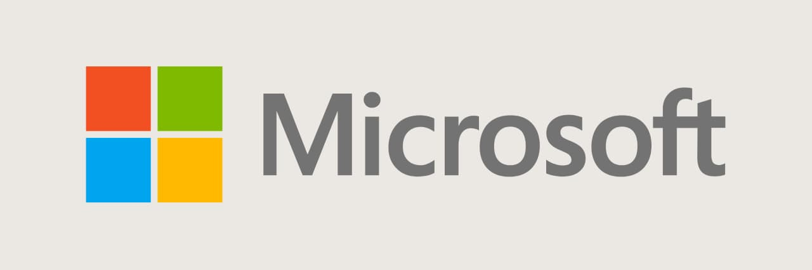
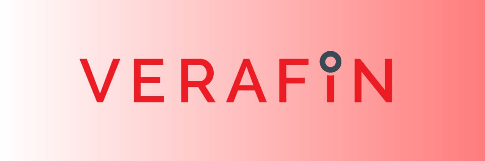
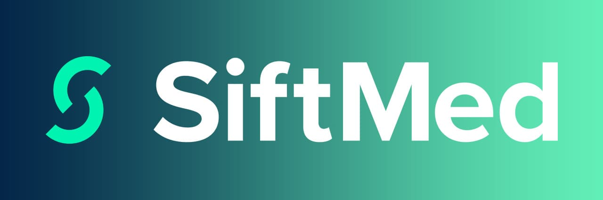
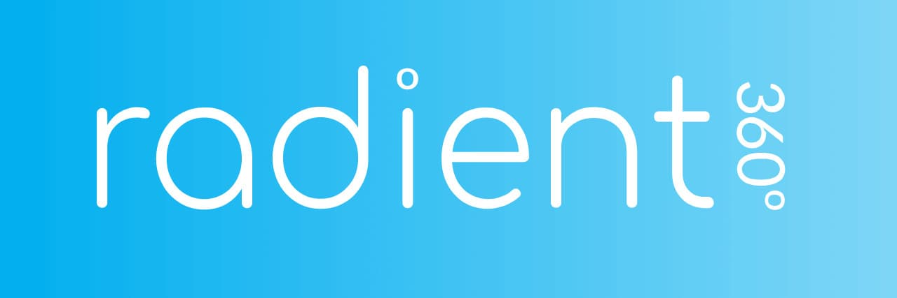
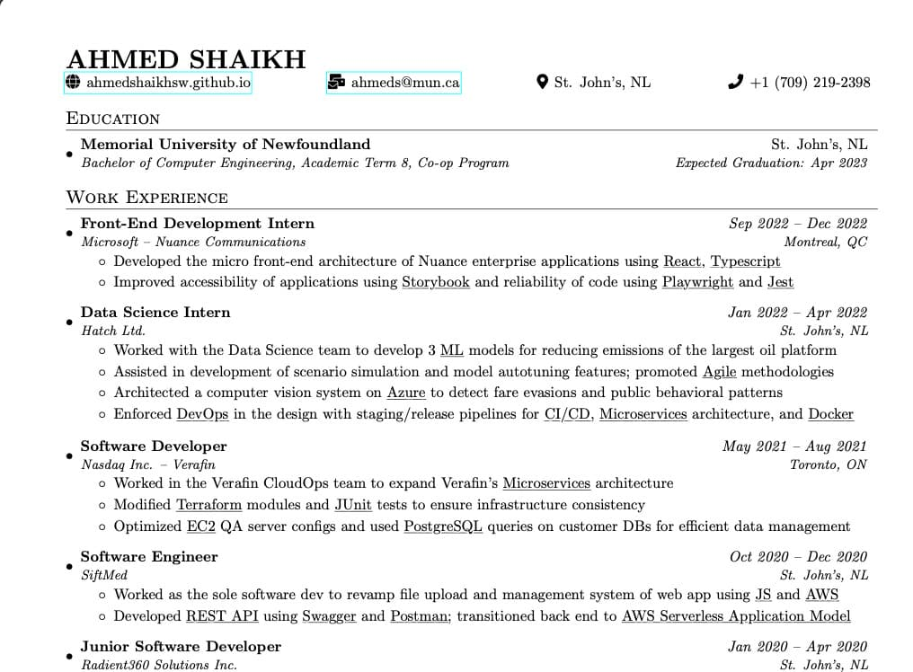

Projects/
Extracurricular

MASY AI
Developing an automated home telerehabilitation system through Computer
Vision for my capstone project. Won first prize out of 16 other teams.
(Python, Flask, Redis, JavaScript, React, Node)
Microsoft Global Hackathon 2022 Winner
Won First Place for "Hack for Quality" in Microsoft's 2022 Global internal hackathon,
the largest private hackathon in the world. My team developed a feature for Linux's
internal tool for safe updates on deployed Virtual Machines. Canonical now has plans
to implement the feature in a Ubuntu feature update soon! :)

ScriptIt
Worked in a team to develop a desktop application that transcribes user
selected videos and allows editing/deleting transcripts along with a
universal keyword search to find words in transcripted videos.
(Python, Eel, JavaScript, HTML, CSS)
Facial Recognition
Incorporated the use of Distributed Computing to identify and remember
faces in a video.
(Python, Ray, OpenCV, face-recognition)

Cryptography Ciphers
Simulated Playfair, Hill, RSA, Columnar, Diffie-Hellman, Autokey,
Monoalphabetic, Vignere, and Caesar ciphers to encrypt plaintext based
on their algorithms and decrypt the encrypted text.
(Python, NumPy)
Experience

Frontend Development Intern
Microsoft Corp. - Nuance Communications · Sep 2022 - Dec 2022
- Developed and maintained micro front-end architecture for Nuance enterprise apps using Typescript and React, resulting in faster page load times and an improved user experience for customers
- Developed the design system using Storybook, improving accessibility and reliability of the application
- Wrote Playwright test cases to ensure the reliability and scalability of UI components
Data Science Intern
Hatch Ltd. · Jan 2022 - Apr 2022
- Developed machine learning models to reduce emissions by 20% for the largest oil platform using Python and Sklearn; ML models achieved 96% accuracy on testing data
- Developed initial design of a computer vision system on Azure Cloud to detect fare evasions in public transit
- Promoted DevOps in the design and the team with CI/CD pipelines, version control, and Docker

Software Developer
Nasdaq Inc. - Verafin · May 2021 - Aug 2021
- Expanded Verafin’s Microservices architecture on the CloudOps team
- Modified Terraform modules and JUnit tests to ensure infrastructure consistency
- Optimized EC2 QA server configs and used PostgreSQL queries on customer DBs for efficient data management

Software Engineer Developer
SiftMed · Oct 2020 - Dec 2020
- Spearheaded complete overhaul of the file handling system of a web app, leveraging JavaScript and AWS, resulting in a faster and more streamlined process
- Successfully scaled the REST API using Swagger, and Postman, resulting in improved performance and reliability
- Migrated the back-end to a serverless model using Lambda, reducing costs and increasing scalability

Junior Developer
Radient360 Solutions Inc. · Jan 2020 - Apr 2020
- Worked in a team to develop asset and risk management apps for Oil & Gas MNCs
- Contributed to sprint planning and drove meeting to discuss task outcomes
- Migrated webapp to new framework using React, NodeJS, Docker
Research Assistant
Memorial University of Newfoundland · Aug 2021
- Increased Memorial University's Times Higher Edu. Impact ranking from 301-400 to 101-200 by recording their sustainable research and practices
- Captured information relevant to 17 United Nations Sustainable Development Goals by working with 3 team members
- Gathered 59 evidences across 15 subcategories relevant to preserving aquatic life
Mentors Assistant
Memorial University of Newfoundland · Sep 2021 - Dec 2021
- Provided organizational support to 10+ mentors by working in a team of 4
- Created open communication by organizing and hosting 4 socializing events.
Engineering One Success Center Tutor
Memorial University of Newfoundland · Sep 2019 - Dec 2019
- Tutored engineering students on first year courses at the engineering help center
- Stayed up to date with ongoing assignments and communicating with professors
Arrivals Assistant
Memorial University of Newfoundland · May 2019 - Dec 2019
- Scheduled and assigned staff to 200+ airport greets for new arrival students
- Managed flight information and student data using MS Excel
Student Outreach Assistant
Memorial University of Newfoundland · Feb 2019 - Dec 2019
- Managed a student driven food blog using WordPress on a Virtual Private Server
- Organized weekly events and implemented techniques for gaining attendance
Resume
Click thumbnail to view.
